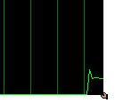

Replicants
Replicants are a very useful feature of the BeOS, but the aren't well known.
Therefore I'll give you a short introduction.
- Select "Show replicants" in you Be menu. This will show
little handles on every replicantable view.

- Now you can drag a replcatable view into a different application.
Simply click on its handle and begin to drag. Drop the view on a replicant
accepting application, like the desktop. This will create a copy
of that view in the destination application.
- To get rid of a replicated view, simply right-click on its handle
and select "Delete".